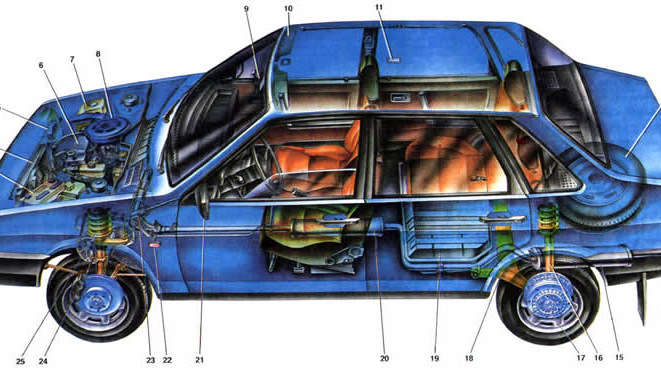

ВАЗ-2109 («Спутник», просторечное название — «девятка») — советский и российский
переднеприводной автомобиль II группы малого класса с кузовом типа хэтчбек. Пятидверная
модификация ВАЗ-2108 в семействе моделей «Лада Самара».
История
Серийное производство ВАЗ-2109 началось в 1987 году на Волжском автомобильном заводе.
Первоначально автомобиль оснащался рядными четырёхцилиндровыми 8-клапанными карбюраторными
бензиновыми двигателями объёмом 1100, 1300 и 1500 см³.
Некоторые этапы выпуска:
В 1991 году внедрён новый дизайн «передка» машины — с «длинными» передними крыльями и капотом.
С 1994 года на ВАЗ-2109 стали устанавливать 1,5-литровые двигатели с впрыском топлива.
Выпуск автомобиля на заводе продолжался до 2006 года, после чего машина была заменена моделью
ВАЗ-2114.
Конструкция
Кузов — двухобъёмный, типа хэтчбек.
Передняя подвеска — полностью независимая, типа Макферсон. Задняя подвеска — полунезависимая с
поперечной балкой, работающей на кручение.
Оснащался механической трансмиссией, в состав которой входили однодисковое простое сцепление, 4-
или 5-ступенчатая коробка передач, цилиндрическая главная передача, конический дифференциал,
приводные валы со ШРУСами.

Особенности:
Передние сиденья — с подголовниками, регулируются по длине и наклону спинки.
Заднее сиденье может складываться для увеличения багажного отделения.
Модификации
На протяжении выпуска ВАЗ-2109 было выпущено несколько модификаций:
ВАЗ-2109 — базовая модель, карбюраторный двигатель 1,3 литра (1987–1997);
ВАЗ-21091 — модификация с карбюраторным двигателем 1,1 литра (1987–1997);
ВАЗ-21093 — модификация с карбюраторным двигателем 1,5 литра (1988–2006).
Модель
Модель я взял у Пользователя mamont nikita
У него ещё много таких крутых моделей и я их использую для сайта. Спасибо mamont nikita!